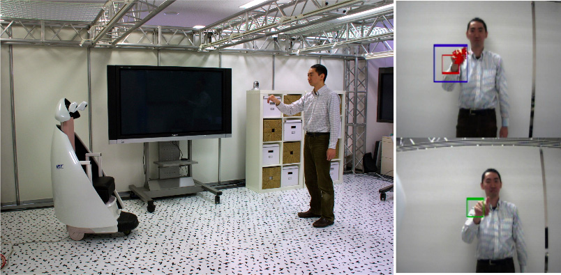

室内用パーソナルモビリティロボット
室内用パーソナルモビリティロボットの操縦インタフェース
室内型パーソナルモビリティには多くのセンサーが搭載されており、1.シート上の物体が人体かどうかを判別し、2.人体の重心、シートの回転、足裏の位置を検出し、3.搭乗者の体の動きだけでロボットを操縦することができる。
床模様を利用した位置認識

床模様の見え方からロボットの絶対座標を計算する。
Recognition of hand beckoning
ユーザの手招きを認識して近づく。
Publications
- 髙畑智之, 中井亮仁, 大村吉幸, 檜山敦, 友國伸保, 岡部康平, 松本潔, “屋内型パーソナルモビリティのハプティック操縦インタフェース,” 第27回日本ロボット学会学術講演会 (RSJ2009), 2E2-03, 2009.
- website of IRT Reserach Inisiative, The University of Tokyo